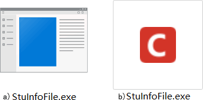
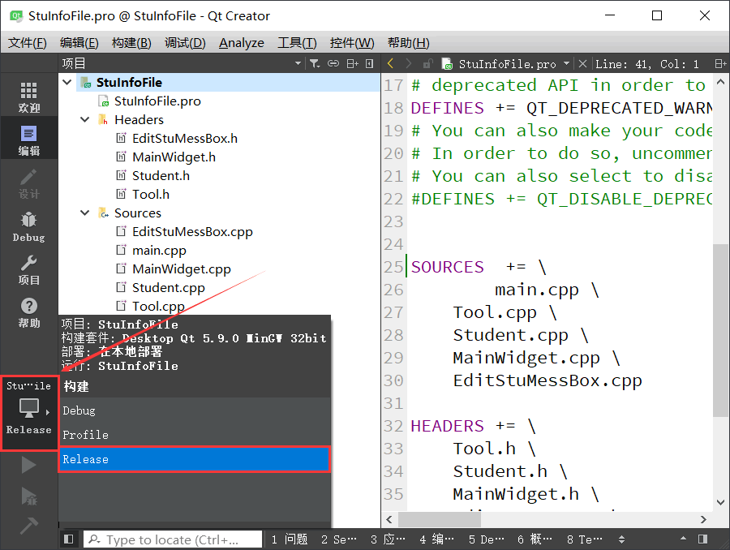
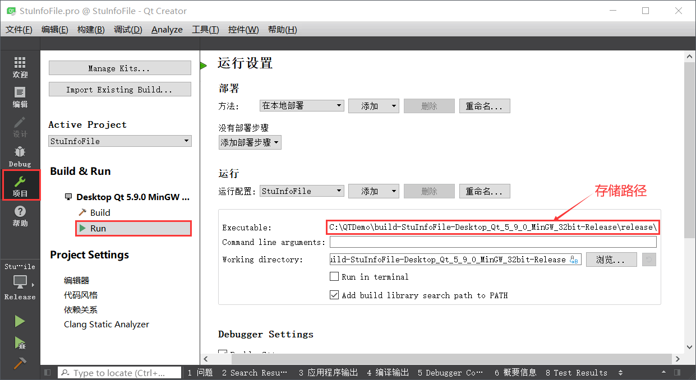
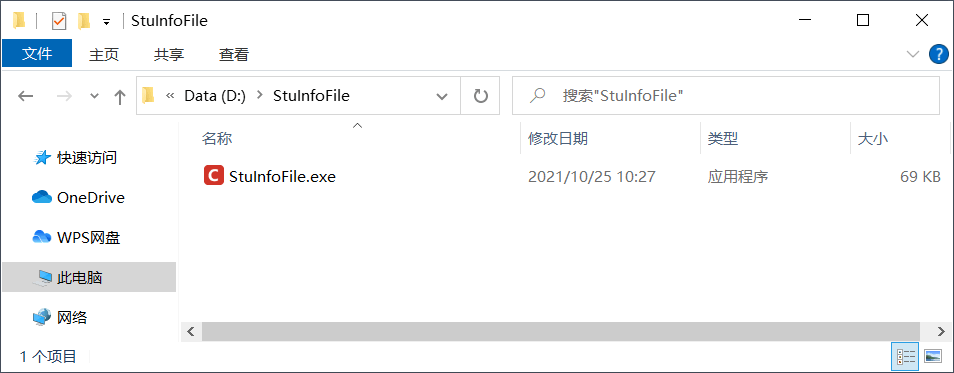
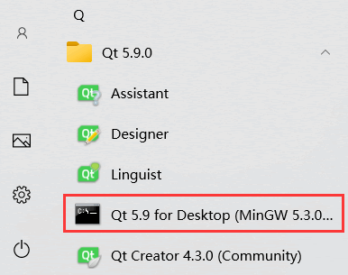
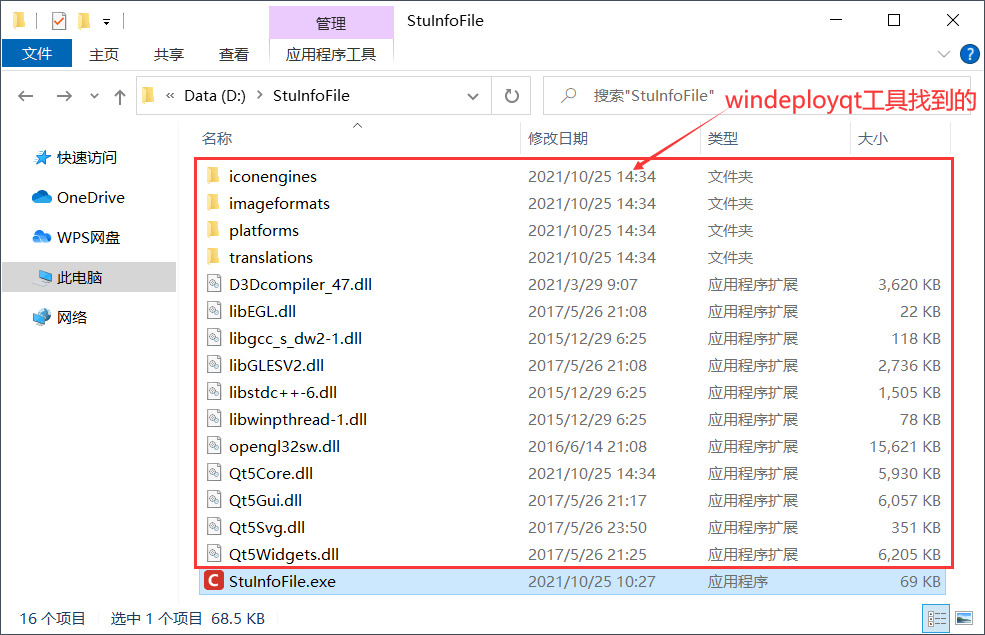

首页 > 编程笔记
Qt打包程序详解（适用于Windows平台）
分享 Qt 程序（项目）的方式无非两种，要么直接分享程序的源代码，要么分享程序生成的可执行文件。
和直接分享源码相比，大多数人会选择后者。但遗憾地是，Qt Creator 默认以动态链接的方式生成可执行文件，该文件无法独立运行，必须为其提供所需的动态链接库。也就是说，只分享 Qt Creator 生成的可执行文件是不行的，必须将运行所需的动态链接库一起分享，可执行文件才能在他人的电脑上正常运行。
对 Qt 程序进行打包，指的就是找到可执行文件运行需要的所有动态库文件，并将它们统一存放到指定的空文件夹里。本节以编写完成的学生信息管理系统为例，给大家讲解“怎样在 Windows 平台上打包一个 Qt 程序”。
为可执行文件添加图标
《Qt实现学生信息管理系统》一节讲了如何给程序中的窗口添加 icon 图标。打包 Qt 程序之前，我们也可以给可执行文件设置 icon 图标。以学生信息管理系统为例，默认生成的可执行文件如图 1a) 所示，添加 icon 图标后的可执行文件如图 1b) 所示。

图 1 设置 icon 图标
图 1 设置 icon 图标
为可执行文件添加 icon 图标的方法很简单，将事先准备好的 icon 图标拷贝到程序对应的文件夹中，然后在 pro 工程文件内添加如下指令：
RC_ICONS += logo.ico其中，logo.ico 是图标文件的名称。重新对程序进行编译、链接，最终生成的就是带 icon 图标的可执行文件。
Qt程序打包
打包 Qt 程序，通常选用以 release 模式生成的可执行文件。和 debug 模式相比，release 模式生成的可执行文件体积更小，运行效率更快。Qt Creator 默认以 debug 模式生成可执行文件，如下图所示，可以手动修改 Qt Creator 以 release 模式生成可执行文件：

图 2 以 release 模式生成可执行文件
图 2 以 release 模式生成可执行文件
选择“Release”之后，再次运行程序，生成的可执行文件可以在下图所示的路径中找到：

图 3 可执行文件的存储位置
图 3 可执行文件的存储位置
找到可执行文件之后，将其拷贝到一个空的文件夹，比如笔者将其拷贝到了新建的 D:\StuInfoFile 文件夹中，如下图所示：

图 4 将可执行文件拷贝到新建的文件夹内
图 4 将可执行文件拷贝到新建的文件夹内
在“开始”中找到 Qt 命令行程序并打开，如下图所示：此时的 StuInfoFile.exe 是无法运行的，双击它系统会提示类似“找不到 xxx.dll”的错误信息。

图 5 Qt命令行程序
图 5 Qt命令行程序
在命令行中，先执行 "cd D:\StuInfoFile" 命令进入 StuInfoFile 文件夹，然后再执行 "windeployqt StuInfoFile.exe" 命令。windeployqt 是 Qt 提供的 Windows 平台打包工具，它能找到 StuInfoFile.exe 可执行文件需要的所有动态链接库，并将它们拷贝到当前文件夹中。
成功执行命令之后，StuInfoFile 文件夹内会增加很多文件夹和文件（如下图所示），这些都是 StuinfoFile.exe 执行所需要的。

图 6 打包后的 StuInfoFile 文件夹
图 6 打包后的 StuInfoFile 文件夹
再次双击 StuInfoFile.exe，如果它可以成功执行，表明打包操作是成功的。我们可以直接将 StuInfoFile 文件夹分享给他人，只要是 Windows 平台，都可以直接点击运行 StuinfoFile.exe 文件。
关注公众号「站长严长生」，在手机上阅读所有教程，随时随地都能学习。内含一款搜索神器，免费下载全网书籍和视频。

微信扫码关注公众号